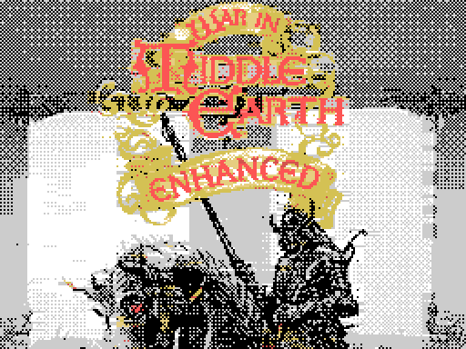
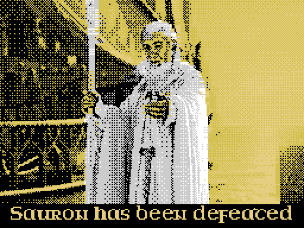
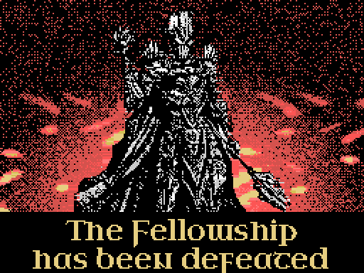

The game shipped on cassette and takes six and a half minutes to load. This turns it into a cartridge that boots in nine seconds, without changing a single byte of the game.
There are two cartridges. The plain one is the game as it is, only without waiting for the tape. The enhanced one also adds music, pictures and speed, and is the one to play. This page covers the enhanced one and how to build each of them.
It starts from the patched tape and adds things that do not fit on tape. It is the one to play and the one the testers get.
Music. War in Middle Earth for MSX has no music and no sound effects: it is silent from start to finish. This cartridge carries three songs by Araubi:
| when it plays | song |
|---|---|
| in the opening menu | Niebla |
| during the game, on the map | Taberna |
| from the moment a battle is announced until it ends | Batalla |
The M key turns the music off and, pressed again, back on.
Three new pictures, also by Araubi: the one shown while the game starts, the one for winning and the one for losing. The original ones were those of the ZX Spectrum version, which allows two colours per 8×8 pixel cell; the new ones are made for the MSX, which allows two colours per 8-pixel line.
| on start-up | on winning | on losing |
|---|---|---|
 |  |  |
Six place names in full. On the map, a sign pops up when you move over a named place. Six did not fit and the game cut them short (the game is in Spanish):
| on tape | on this cartridge |
|---|---|
Ptos Grises | Puertos Grises |
Quebradas | Quebradas Lejanas |
LosGamos | Los Gamos |
Abism Helm | Abismo de Helm |
Ga. Hierro | Garganta de Hierro |
Puerta N | Puerta Negra |
And the rest: the close-up view of the map runs thirteen times faster, the cursor is a sprite, every army has a drawing on the map instead of just a colour, the battle background follows the terrain, and there are two more heroes, Tom Bombadil and Radagast. Each one is explained in the README.
Araubi tests every build by playing it, and has played many whole battles without trouble. That is how a bug turned up: on the overview map, the one showing all of Middle Earth, the right-hand side came out as stripes instead of the drawing.
The cause: that map was sent to the video chip at one byte every 22 clock cycles, and the chip, with the picture on, needs about 29 between bytes. Those that arrived too soon were lost: 4,094 of 6,144. It is now sent at 39 cycles and arrives whole.
On top of that, an automatic check plays a game in the openMSX emulator and checks that the three pictures reach the screen without a single byte changed, that the right song plays at each moment, and that the M key turns it off and back on.
What is left to do is in open questions.
There is no ROM here either. You build it from your own tape:
make rom # war.rom, from the original tape
make rom_parche # war_parche.rom, from the patched oneBoth come out at 64 KB, ASCII16 type, and neither is distributed: they are the whole game in a different case (see the legal notice).
openmsx -machine Philips_VG_8020 -carta war.rom -romtype ascii16The enhanced cartridge is built with make rom_unificada and comes out as war_unificada.rom. It needs the songs and the pictures, which are not in this repository yet, so it does not work from a plain clone. The other two do.
How a tape game is made to start from a cartridge without changing anything in it is told, in full technical detail, in Inside the cartridge.
The program that plays the songs is not ours. It is the WYZ PSG proPLAYER, by WYZ, in the version that theNestruo (Néstor Sancho) publishes inside the msx-msxlib library. That version keeps the code apart from its variables, which is what lets it sit in a cartridge ROM.
The songs and the pictures belong to Araubi and are not in this repository yet. That is why make rom_unificada does not work from a plain clone: it needs those files. make rom and make rom_parche do work.